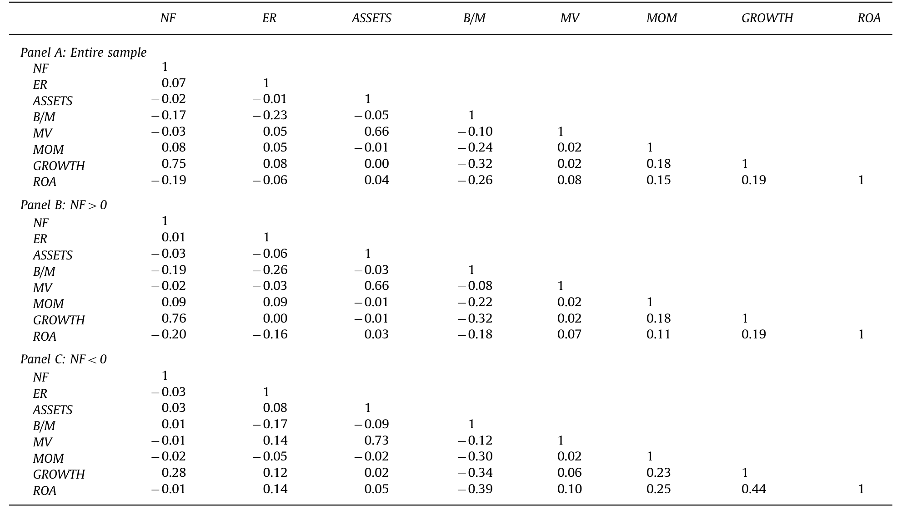
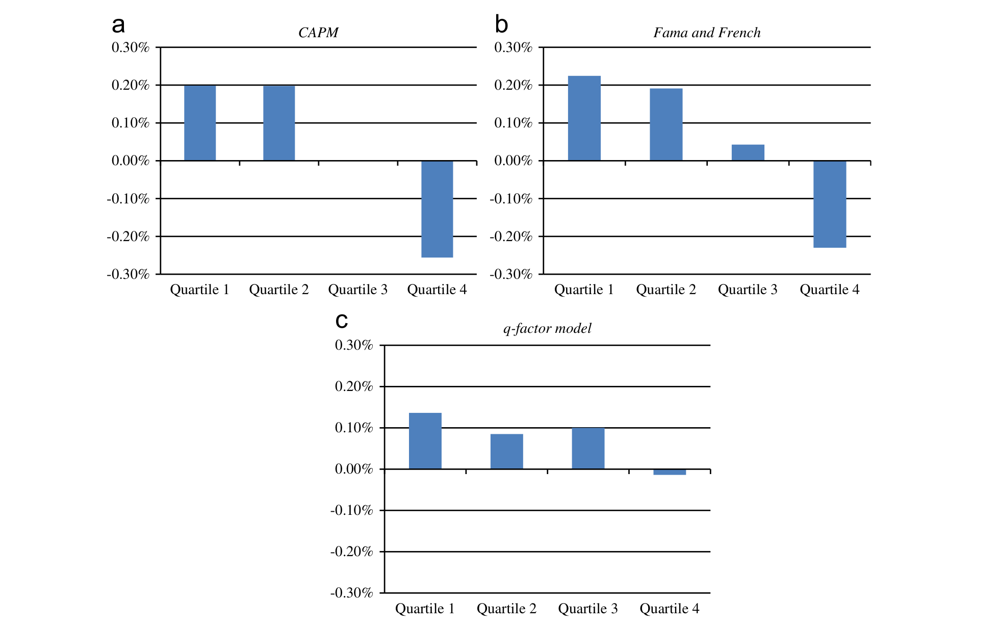
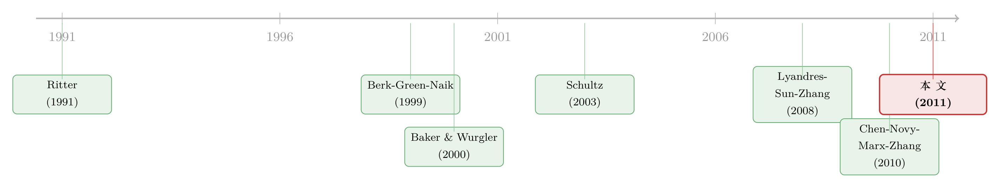

公司一发证券股价就跌：是老板在「择时」，还是市场在「定价」？
本文读的是 Butler, Cornaggia, Grullon & Weston (2011, Journal of Financial Economics)：公司发行证券之后股价普遍跑输，这件事「市场择时」和「实际投资」两种理论都能解释；但只有择时理论额外预言——发的是股还是债（融资的「成分」）也该预测收益。作者把「融资总量」和「融资成分」放进同一个回归，结果是：总量（投资的代理变量）把成分（择时的代理变量）挤了出去。换句话说，看起来像「老板精明择时」的现象，其实更像「企业实际投资对收益的理性响应」。
1 一个所有人都同意的事实，和两套互相打架的解释
先说一件金融学里几乎没有争议的经验事实：公司在募集外部资本之后，股票往往跑输大盘。
发新股之后会跑输（Ritter, 1991；Loughran and Ritter, 1995；Spiess and Affleck-Graves, 1995；Baker and Wurgler, 2000），发债之后也会跑输（Lee and Loughran, 1998；Spiess and Affleck-Graves, 1999）；反过来，公司把现金还给股东和债权人——回购、分红——之后则倾向于跑赢（Ikenberry, Lakonishok and Vermaelen, 1995）。Richardson and Sloan (2003) 干脆把它写成一句话：外部融资与未来收益负相关。
事实只有一个，解释却有两套，而且这两套解释讲的是完全不同的故事。
第一套是 市场择时 (market timing)。它说：经理人是聪明的，甚至比市场更聪明。当自家股票被高估时，他们趁机增发股票「割韭菜」；当股票被低估时，他们回购。于是，发行之后的低收益，是「高估被纠正」的必然结果。这是一个关于经理人能战胜市场的故事。
第二套是 实际投资 (real investment)，背后是 q-理论和实物期权。它说：市场其实是有效的。公司之所以在募资后收益低，是因为募来的钱被投进了实际项目——增长期权 (growth option) 被行使、变成了在手资产，而在手资产比期权风险更低（Berk, Green and Naik, 1999；Carlson, Fisher and Giammarino, 2004）；或者，公司的资本成本下降本身刺激了投资，低预期收益是低资本成本的镜像（Zhang, 2005；Liu, Whited and Zhang, 2009）。这是一个关于理性定价的故事，里面没有任何人被「割」。
两套故事预测的现象一模一样，可它们对市场是否有效、经理人是否精明的判断截然相反。这就是这篇论文要解决的难题：怎么在同一份数据里，把「择时」和「投资」拆开？
2 真正关键的一步：一个被大多数人忽略的「成分」预测
要分清两个长得一样的东西，得找到它们唯一不一样的地方。Butler 等人的洞察，正在于此。
首先，两套理论有一个共同预测，作者称之为 水平效应 (level effect)：无论是择时还是投资，只要公司净融资 (net financing) 的水平上升——也就是它在净额上从市场拿走了更多钱——未来收益就该更低。这一点两边都同意，所以单看它无法分辨谁对谁错。
接着，一个自然的问题是：那它们到底在哪儿分道扬镳？
答案藏在「成分」里。市场择时多了一条独有的预言——成分效应 (composition effect)：经理人之所以在高估时多发股、少发债，在低估时多回购股，是因为被错误定价的是股权而不是债权。所以，在给定净融资水平之后，融资里股权占比越高的公司，未来收益应当越低。 用作者的话说：条件在净融资水平上，择时预测「股权发行者的收益低于债权发行者，股权回购者的收益高于债权回购者」。
而实际投资理论没有这条预言。在 q-理论里，投资就是投资，钱是借来的还是发股募来的无所谓——重要的是「投了多少」，不是「钱从哪儿来」。
于是检验设计水落石出：
把「净融资水平」和「股权占比」放进同一个回归。 · 如果是择时主导，控制住水平之后，成分（股 vs 债）仍应显著预测收益； · 如果是投资主导，一旦控制住水平，成分就该失去预测力。 这是一场让两套理论正面对撞的「联合检验」。
这正是本文区别于以往文献的地方：过去的研究要么只看水平（外部融资与收益），要么只看成分（Baker-Wurgler 的股权份额），却很少把两者塞进同一个方程让它们抢解释力。
3 两把尺子：净融资水平 NF 与股权比率 ER
要做联合检验，得先把「水平」和「成分」各自量化成一个干净的变量。
作者用 净融资 (net financing, NF) 度量「水平」，也就是投资的代理。之所以用净额，是因为公司常常在同一财年里又减股息、又增发、又还债、又回购——不看净额，你根本说不清它到底是在向市场拿钱还是还钱。先定义净股权和净债务：
$$\text{NetEquity}_t = \text{EquityIssues}_t - \text{EquityRepurchases}_t$$
$$\text{NetDebt}_t = \text{TotalDebt}_t - \text{TotalDebt}_{t-1}$$
其中股权发行用 Compustat 的 SSTK、股权回购用 PRSTKC、总债务用 DD1 + DLTT。净融资就是两者之和除以期初总资产 AT：
$$NF_t = \frac{\text{NetEquity}_t + \text{NetDebt}_t}{\text{Assets}_{t-1}}$$
这个变量的精神，正是一家 Modigliani-Miller 式「要么净募集、要么净分配」的公司——它捕捉了全部可能的资本流动方向。
再用 股权比率 (equity ratio, ER) 度量「成分」，思路上对应 Baker and Wurgler (2000) 的新发行股权份额：
$$ER_t = \frac{\text{NetEquity}_t}{\text{NetEquity}_t + \text{NetDebt}_t}$$
ER 越高，说明这一年募来的净资本里股权占比越大——这正是择时理论该「咬人」的地方。
样本是 CRSP 与 Compustat 的交集，剔除公用事业与金融业（SIC 4900–4999、6000–6999），总资产大于 1000 万美元，时间跨度 1971–2008，共 116,788 个公司-年观测。描述统计里，NF 平均 0.06（公司平均每年净募集约 6% 的资产），但中位数只有 0.01——典型公司其实进出都不大；ER 平均 0.32。在净募集的子样本（NF>0，63,575 个观测）里，ER 均值升到 0.37，意味着募资的公司平均约 40% 的新钱来自股权。
那么，凭什么说 NF 真的是「投资」的代理，而不只是个会计噪声？两条证据：第一，NF 与资产增长 GROWTH 的相关系数高达 0.75；第二，把样本按 NF 分成十组，未来的资本开支随当期净融资单调递增（论文 Fig. 1），且这种单调关系在三年、五年的长窗口里依然成立。这与 Lyandres, Sun and Zhang (2008) 的发现一致：净融资是未来投资的强代理。
更关键的是另一个相关系数——NF 与 ER 在全样本里的相关只有 0.07，在净募集与净分配的子样本内更是接近于零（0.01 与 -0.03）。 这意味着「水平」和「成分」是两个近乎正交的维度，把它们放进同一个回归不会互相「打架」打成一锅粥，谁有解释力是看得清的。

Table 2: presents a correlation matrix for our whole seriesmonthlyalphasusingthreeempiricalfactormodels:
4 联合检验：当「投资」把「择时」挤出房间
故事到这里，先让两个变量各自单飞。
单独看，两把尺子都管用。按净融资水平分组，收益确实单调下降；按股权比率分组，也能看到「发股越多、未来收益越低」的影子——这与择时理论表面上完全吻合。作者用了三种因子模型来度量「异常收益」：资本资产定价模型 (CAPM)、Fama and French (1993) 三因子 (FF3)，以及 Chen, Novy-Marx and Zhang (2010) 的 q-因子模型 (q-factor model)：
$$r_{it}-r_{ft}=a_i^{CAPM}+b_i\,MKT_t+e_{it}$$
$$r_{it}-r_{ft}=a_i^{FF}+b_i\,MKT_t+s_i\,SMB_t+h_i\,HML_t+e_{it}$$
q-因子模型在传统的市场因子之外，额外加了一个投资因子 INV（低投资减高投资组合的收益差）和一个盈利因子 ROAF（高 ROA 减低 ROA）：
然后是第一处反转。在 CAPM 和 FF3 下，按净融资分位排出的月度 alpha 随净融资单调下降（论文 Fig. 2 左上、右上两图），印证了人人都看到的「发行后跑输」。但一旦换成 q-因子模型，这条单调下滑的曲线被明显压平了——投资因子和盈利因子，把那块「异常收益」基本吃干净了。也就是说，发行后的跑输，并不需要「错误定价」来解释，理性的投资风险变化就够了。

Figure 2: presents monthly alphas by quartiles of net theequityratio.Wethencalculatemonthlyvalue-weighted
但真正决定胜负的一步，是把水平和成分放进同一张表里抢解释力。作者在每个净融资分位之内，再按股权比率细分，做成 16 个组合（论文 Table 3），分别在净募集（NF>0）与净分配（NF<0）的子样本里跑。结论干脆利落：
一旦控制住净融资水平，融资成分（股 vs 债）对未来收益的预测力就消失了。 净股权发行者与净债务发行者的未来异常收益基本相同；净股权回购者与净债务回购者也基本相同。换句话说，把两个故事放在一起，投资效应把择时效应挤出了房间。
而且这个结论极其稳健：无论按市值、账面市值比、动量，还是按投资者情绪 (Baker and Wurgler, 2006) 把样本切开，净融资水平始终预测收益，而融资成分始终不预测。
作者还做了一个很漂亮的「配对样本」检验来堵住最后一个漏洞：把净股权发行者与净融资水平相同的净债务发行者一对一配对。既然水平被配平了，剩下的收益差就只能来自「成分」。结果——两组的异常收益没有差别。择时，再一次落空。
5 一路打到总量层面：净融资也击败了 Baker-Wurgler 的股权份额
到这里，怀疑论者还能反击一句：横截面上择时被挤掉，可总量 (aggregate) 层面呢？Baker and Wurgler (2000) 那个著名的结论——新发行里的股权份额 S 能预测未来整个市场的收益——不正是宏观择时的铁证吗？
作者把同样的逻辑搬到时间序列：用总量净融资的变化和总量股权份额一起预测未来市场收益。结果与公司层面如出一辙——总量净融资的预测力，强于 Baker-Wurgler 的股权份额变量 S。 新资本的「量」，依旧比它的「成分」更重要。
这一步把论文的核心主张从一家公司推到了整个市场：不管在哪个层面，能预测收益的是「募了多少」，而不是「募的是股还是债」。
6 文献脉络：从「新发行之谜」到「投资把择时挤出」
把镜头拉远，这篇论文站在一条延续了二十年的研究脉络的末端。
最早，是一组让人困惑的经验事实。Ritter (1991) 发现 IPO 长期跑输，Loughran and Ritter (1995) 把它升级成「新发行之谜 (new issue puzzle)」。一个自然的解释呼之欲出——经理人在择时，而 Baker and Wurgler (2000) 用总量股权份额能预测市场收益，把这个解释推到了顶峰。
接着，一个反方阵营登场。Berk, Green and Naik (1999) 与 Carlson, Fisher and Giammarino (2004) 用实物期权讲明白了：公司一投资、把期权变成资产，风险下降、预期收益自然下降——根本不需要错误定价。Zhang (2005) 把价值溢价也纳入这套理性投资框架。
然后是釜底抽薪的一击。Schultz (2003) 提出「伪市场择时 (pseudo market timing)」：哪怕经理人毫无预测能力，只要发行量与股价随商业周期同向波动，事后也会「看起来」像择时。Lyandres, Sun and Zhang (2008) 进一步证明，在控制了投资因子之后，新发行之谜大幅缩水。Chen, Novy-Marx and Zhang (2010) 则交出了那把决定性的工具——q-因子模型，能解释一系列资产定价异象。

Butler 等人 (2011) 就站在这里：他们没有满足于「投资也能解释」，而是抓住了两套理论唯一的分歧点——成分效应——设计了一场让二者正面对撞的联合检验，最终把球判给了实际投资。关于「投资类变量的构造方式如何左右因子模型的成败」，可参见《因子模型的成败，藏在一个变量的「构造方式」里》；而对投资基础资产定价模型本身是否经得起逐年对账的怀疑，则可参见《一个「成功」的模型，为什么经不起逐年对账？》。
7 评论与延伸（Q&A + 研究方向）
(a) 几个可能的疑问
Q：既然两套理论都预测「水平效应」，那本文只是又验证了一遍人人都知道的事吗？
不是。本文的价值不在于水平效应本身，而在于它孤立出了成分效应——这是择时独有而投资没有的预测。把成分放进回归后它失去解释力，才是真正有信息量的「反事实」。验证共同预测说明不了谁对，证伪独有预测才能。
Q：「投资把择时挤出」会不会只是因为 q-因子模型『过度拟合』，把任何东西都能解释成投资？
这是最值得警惕的一点。q-因子模型的
INV因子本身就是用投资排序构造的，用它去解释「与投资高度相关的净融资」，难免有点「同义反复」的味道。但作者的配对样本检验不依赖任何因子模型：它直接把水平配平、只留成分差，结果成分差依然为零。这条证据相对独立，缓解了「全靠模型」的担忧。
Q：和 Baker-Wurgler 的择时证据矛盾吗？
不算正面矛盾，而是「重新归因」。Baker-Wurgler 的股权份额确实预测收益，但本文显示：一旦同时放进净融资总量，总量的预测力更强、份额被边缘化。择时变量的预测力，很可能是它与投资总量相关而借来的，而非真有择时本事。这与 Schultz (2003) 的「伪择时」精神一致。
Q：median 净融资只有 0.01，是不是说大多数公司其实没怎么动？那结论是被少数极端公司驱动的吗？
中位数接近零确实说明典型公司进出有限，但结论来自横截面分位排序与配对，识别力主要来自两端——大额净募集和大额净分配的公司。作者也在不同规模、账面市值比、动量子样本里反复验证，结论没有被某一类极端公司绑架。
Q：这是不是意味着「经理人完全不会择时」？
没那么强。本文的主张是平均而言、在可被这些代理变量捕捉的范围内，择时没有增量解释力。它不排除个别公司、个别窗口存在真实择时，只是说它不是发行后收益的系统性驱动力。
Q：剔除了金融和公用事业，对外部有效性有多大影响？
标准做法，主要是因为这两类公司的资本结构受监管/牌照驱动，「净融资」的经济含义不同。代价是结论不能直接外推到银行、保险这类高杠杆受监管主体——而这恰恰为下面的研究方向留了口子。
(b) 几个可能的研究问题与提案
1. 把「水平 vs 成分」检验搬到公司债市场
【经济故事】本文的「成分」只区分了股 vs 债。但在债内部还有更细的成分——期限、是否担保、固定 vs 浮动。如果经理人真有择时本事，更可能体现在「利率择时」上（Barry et al., 2008, 2009 已发现发债时点与利率水平相关）。问题是：控制住净发债总量后，债的期限/成分还能预测未来债券超额收益吗？ 【可行性】中。需要 TRACE 债券收益、Mergent FISD 发行明细，识别上可复刻本文的「配平总量、只留成分」配对思路。难点是债券二级流动性噪声大，需用 size-adapted 流动性度量过滤。
2. 外资持有人会不会「污染」净融资的投资代理？
【经济故事】当一家公司大量增发，谁来接盘？如果接盘的是被动指数或外资配置型资金，那么「发行后低收益」里可能混进了需求驱动的价格压力，而非纯粹的投资响应。把净融资按「认购方身份」拆开，能检验 q-理论解释是否在外资主导的发行里减弱。 【可行性】中偏低。需要发行层面的认购方数据（13F、国际持仓 TIC/FactSet Ownership），匹配难度大，且因果识别需要外生的需求冲击（如指数纳入）。doable 但工程量重。
3. 用「伪择时」的镜子重估近十年的 SEO/回购潮
【经济故事】Schultz (2003) 的伪择时依赖「发行量与股价同向、随周期波动」。2010 年后回购规模空前、且高度顺周期，正是检验伪择时的天然实验场。问题：把样本延到 2008 年之后，本文「投资挤出择时」的结论是否依旧成立，还是低利率环境改写了它？ 【可行性】高。数据是现成的 Compustat + CRSP 延展，方法完全照搬本文，属于「更新样本 + 子期对比」的高确定性复制研究。
4. 把净融资水平因子拿去和「分析师预期错误」对账
【经济故事】近期有文献（如《不需要那些「玄学风险」》）主张价值、动量等溢价其实是分析师系统性预期错误。那么发行后的低收益，到底是 q-理论的理性投资，还是预期错误的纠正？把净融资分位组合的收益，回归到分析师预测修正上，可以做一次「理性 vs 行为」的第三方裁决。 【可行性】中。需要 IBES 分析师预期数据，识别上是横截面对账，doable，难点在于把「投资」与「预期错误」两个解释干净地分离。
8 我的判断
贡献。 这篇论文最漂亮的地方，是方法论上的简洁：它没有发明新数据、新因子，只是抓住了两套理论唯一的分歧点——成分效应——然后设计了一个让它们正面对撞的联合检验。NF 与 ER 近乎正交（相关仅 0.07）这一事实，是整个识别的基石，让「谁挤出谁」看得格外干净。把结论从公司层面一路推到总量、再用免模型的配对样本兜底，论证链条相当完整。
对识别的担忧。 最大的隐忧仍是 q-因子模型与净融资在构造上的「近亲关系」——用投资因子解释投资代理，多少有循环论证之嫌。作者用配对样本部分化解了它，但「水平效应」本身到底有多少是风险、多少是错误定价，这篇论文其实没有回答，也无意回答——它只回答了「成分不重要」，而把「水平为什么重要」留给了 q-理论与行为派继续争。换句话说，它证伪了择时的独有预言，却没有证实投资的因果机制。
后续想看到的。 三件事：其一，把样本延到 2008 年之后，看低利率、巨量回购的十年是否改写结论；其二，在债券内部做同样的「水平 vs 成分」拆解，检验「利率择时」是否比「股权择时」更顽强；其三，用认购方身份把净融资拆开，看「发行后低收益」里有多少其实是需求驱动的价格压力，而非投资响应。能把这三步走完，「企业为什么在募资后跑输」这个二十年的老问题，才算真正被拆到了底。
参考文献
- Baker, M., Wurgler, J. (2000). The equity share in new issues and aggregate stock returns. Journal of Finance 55(5), 2219–2257.
- Baker, M., Wurgler, J. (2006). Investor sentiment and the cross-section of stock returns. Journal of Finance 61(4), 1645–1680.
- Berk, J.B., Green, R.C., Naik, V. (1999). Optimal investment, growth options, and security returns. Journal of Finance 54(5), 1553–1607.
- Butler, A.W., Cornaggia, J., Grullon, G., Weston, J.P. (2011). Corporate financing decisions, managerial market timing, and real investment. Journal of Financial Economics 101(3), 666–683.
- Carlson, M., Fisher, A., Giammarino, R. (2004). Corporate investment and asset price dynamics: implications for the cross-section of returns. Journal of Finance 59(6), 2577–2603.
- Chen, L., Novy-Marx, R., Zhang, L. (2010). An alternative three-factor model. Unpublished working paper.
- Fama, E.F., French, K.R. (1993). Common risk factors in the returns on stocks and bonds. Journal of Financial Economics 33(1), 3–56.
- Loughran, T., Ritter, J.R. (1995). The new issues puzzle. Journal of Finance 50(1), 23–51.
- Lyandres, E., Sun, L., Zhang, L. (2008). The new issues puzzle: testing the investment-based explanation. Review of Financial Studies 21(6), 2825–2855.
- Richardson, S.A., Sloan, R.G. (2003). External financing and future stock returns. Unpublished working paper, University of Pennsylvania.
- Ritter, J.R. (1991). The long-run performance of initial public offerings. Journal of Finance 46(1), 3–27.
- Schultz, P. (2003). Pseudo market timing and the long-run underperformance of IPOs. Journal of Finance 58(2), 483–518.
- Spiess, D.K., Affleck-Graves, J. (1995). Underperformance in long-run stock returns following seasoned equity offerings. Journal of Financial Economics 38(3), 243–267.
- Xing, Y. (2008). Interpreting the value effect through the q-theory: an empirical investigation. Review of Financial Studies 21(4), 1767–1795.
- Zhang, L. (2005). The value premium. Journal of Finance 60(1), 67–103.